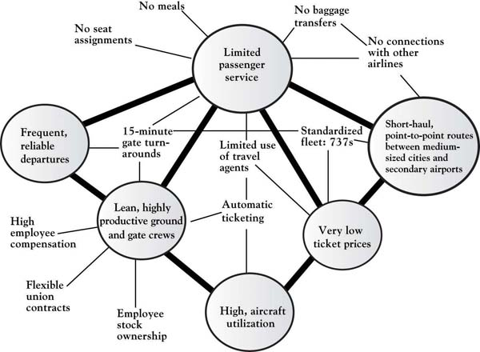
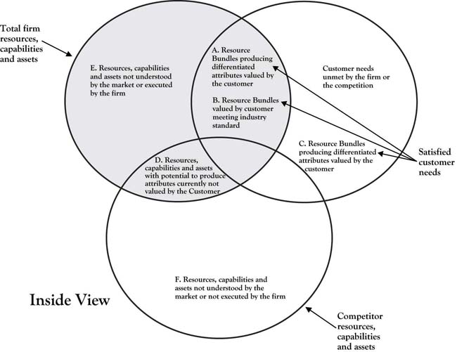

In the Studebaker National Museum sits an automobile that is powered by ion beams. Engineers within the Studebaker Corporation saw an opportunity to build an automobile that used a completely revolutionary design and energy source. They built a prototype of the automobile but lacked the capabilities and assets to produce the ion beams to propel the car as they had planned. If it were possible to produce the envisioned automobile, it would have produced a solid Area A, a point of difference, in the automotive industry. Because they were unable to deliver on their strategy, their prototype sits in the Studebaker National Museum as another good idea that lacked the resources, capabilities, and assets necessary to make it work. The Studebaker Company had the vision but lacked the internal resources, capabilities, and assets to bring their idea to life. The world is full of executives and entrepreneurs who have tremendous strategies and sensational ideas, but who are unable to execute those strategies or carry out those ideas to realize the anticipated dream.
What is in a company’s DNA, its internal characteristics, that makes it possible to produce the goods and services desired by the customer? What are the characteristics that both build and sustain an organization’s current competitive advantage (Area A) and have the potential to create future advantages?
Having identified areas of customer need and opportunity to build a sustainable point of difference, an Area A, executives face the daunting task of implementation. This requires them to look for the resources, capabilities, and assets necessary to successfully achieve Area A. Sometimes the necessary resources, capabilities, and assets can be found inside the firm; other times, the executive must look outside the firm.
Da Ali G Show is a satirical TV series starring Sacha Baron Cohen. During its second season, Cohen, playing the lead character “Ali G,” carried out comedic interviews with unsuspecting celebrities and professionals. In one episode, Ali visited with an investor and showed a blank skateboard, without wheels, and introduced it as a “hoverboard.” Ali explained that he had seen it in a movie (Back to the Future) years ago, and so he knew it was possible to produce one and that it would have huge market potential. In fact, Ali explained he was amazed that someone had not already produced the hoverboard since it had already been in the movies. He went on to explain that all he needed from the investor was a team of scientists with the technology, knowledge, and skills to make the hoverboard work.http://www.youtube.com/watch?v=nkuOuxRD1Bc Ali G had a great idea, with a potentially huge Area A—teens would have lined up to get their own hoverboard; the only thing lacking was the back office, inside resources, capabilities, and assets necessary to make it happen!
Customers rarely know anything about what occurs inside an organization, much less care about what an organization must do to create the attributes they desire. They are often completely unaware of what it takes in terms of the skills, resources, or costs necessary to make attributes and features they desire possible. In most cases, customers only care about the desired benefits that are salient to them are delivered in a cost-effective, efficient manner. For example, most computer users do not understand the internal design and associated knowledge and skills required to create a product with the attributes they desire. In fact, customers will often call those involved with the internal workings of the computer “nerds” or “geeks,” especially when they enthusiastically try to explain the internal beauty of the machine and the competencies involved! Most customers only see the computer’s attributes and expect a great product for a great price. Yet the inside resources, capabilities, and assets necessary for the production of a computer not only makes the current attributes available but also makes future attributes and cost saving possible. The link between the company’s DNA and desired customer attributes can be graphically demonstrated as follow:
Internal Resources → Customer attributes/benefits → Capabilities & Assets → PositionBecause of the link between inside company resources, assets, and capabilities necessary to deliver the attributes customer demand, it is essential that company executives have a clear understanding of not only what organizational DNA is used to deliver current customer attributes and benefits but also how it might be used to deliver future attributes and benefits. Executives who become so focused on current internal practices and characteristics necessary to deliver attributes that current customers demand, without keeping an eye on attributes that future customers will desire, risk market myopia that will make his or her firm irrelevant over time.Christensen (1997). This chapter is designed to help you understand the essential internal building blocks of execution and how to locate them. In the process, you will discover the essential value drivers necessary for your organization to have a sustainable competitive advantage.
In Chapter 6 "Growth Strategy", we described growth strategies. It is now essential that we look inside the firm to determine whether the building blocks exist to actually execute the strategy. Naturally, executives look inside their organizations for the internal resources or building blocks that form the strategic bundles necessary to execute strategies to build their points of differences, or, their Area A. These building blocks are the input that managers use to create product and service attributes that meet current and future customer needs and bring the firm a competitive advantage.Hamel and Heene (1994) provide a nice description of the variety of depictions of the internal mechanisms of the firm. In this book, we have simply collectively referred to those internal building blocks as the internal resources, capabilities, and assets of the organization that may or may not be known to the customer who could only be familiar with the more visible attributes of the product or service. Rigsby and Greco described financial, physical, human, technological, and reputation resources as the major internal firm assets necessary for executing strategy (see Figure 7.1 "Firm Resources").Rigsby and Greco (2005).
Resources, capabilities, and assets are both tangible and intangible and are tied either permanently or semipermanently to the organization.Wernerfelt (1984). For example, employees in the organization provide key capabilities and competencies to the organization. Such capabilities and competencies are intangible and consist of the knowledge, skills, thought patterns, motivation, culture, and networks of the employees in the organization.Dubois (2009); Boyatzis (1982). Dubois and Rothwell argued that employee capabilities could be further classified as either technical-functional or personal functioning.Dubois and Rothwell (2000). Technical capabilities include specialized knowledge, skills, and capabilities that can be used in particular ways within the company. For example, gas metal arc welders have specialized skills because of their ability to weld aluminum at Boeing. Without this capability, Boeing would be unable to deliver fabrication attributes that its airframe customers value. Likewise, computer programmers at Microsoft and Apple have specialized capabilities necessary to produce attributes that end users value in their computer operating systems. A second category of human resource competencies is “personal” and includes management skills, strategic views, networking abilities, and psychological characteristics. Southwest Airlines has often been cited for its managerial skills that create customer relationship attributes that are valued by customers. These managerial competencies have helped build attributes in Southwest Airline’s Area A that other airlines have not been able to imitate. While technical competencies are easier to define, interpret, and apply than personal competencies, personal competencies are also very important and cannot be overlooked.Dubois (2009).
Figure 7.1 Firm Resources

Finances, plants, equipment, and physical assets are resources that are absolutely necessary for creation of attributes that are both valued and expected by customers. Physical resources also include the intellectual property and trade secrets that can be used to create and sustain an Area-A market advantage. Distinctive patents, copyrights, and other assets protect the organization’s advantage from being imitated by competitors and make an important feature of the resource bundle that sustains the distinctiveness of competencies. Physical resources are not considered firm competencies; however, they are necessary for the human competencies to create products and services that are valued by customers. An organization can have the best human capital and capabilities in the industry, but if the organization lacks the resources to execute those competencies, it cannot build its competitive advantage. Likewise, a company can have all the distinctive physical resources but lack the core competencies necessary to develop the products valued by customers for a distinctive advantage. For example, the University of Iowa built a laser-technology building with distinctive, state-of-the-art equipment; however, the university was unable to attract key scientists with the core competencies necessary to bring the university an Area A in laser research. As a result, the building was renamed the “Iowa Advanced Technology Laboratories” and now houses multidisciplinary research rather than the planned laser technology focus.Iowa Alumni Review, 45. A primary reason new ideas and ventures fail is that they lack the bridge funding and physical resources necessary to bundle with human competencies to deliver a product or service to the market. Without the distinctive physical resources to complement the human competencies (knowledge, capabilities, and skills), the organization cannot successfully produce attributes that bring the organization a sustainable advantage.
These resources, capabilities, and assets are structured to build the attributes that are viewed by customers. The sequence of activities that an organization develops to produce attributes often defines the firm, its processes, and culture. Figure 7.2 "Resources, Capabilities, and Assets Build Attributes That Differentiate Products" graphically demonstrates how resources, capabilities, and assets might work together to produce attributes, products, and services.
Figure 7.2 Resources, Capabilities, and Assets Build Attributes That Differentiate Products

How the resources, capabilities, and assets are deployed and associated is an essential characteristic of the organization. As described previously, Southwest Airlines may have human and physical resources similar to any other airline—the way they link the resources and skills to produce the customer-valued attributes is distinctive, giving them a competitive advantage. Michael Porter described how the airline’s attributes are structured in a way that brings the airline a competitive advantage based on low cost and a reputation as the fun airline (Figure 7.3 "Southwest Airlines Attribute Value Chains and Connected Activities"); however, the figure fails to demonstrate the inside view, that is, the competencies and physical resource chains that underlie the attributes.Porter (1980). For example, Southwest Airlines has mechanics whose competencies specialize in the maintenance of a single physical resource—the Boeing 737 airplane. They do not have human competencies in meal preparation or boarding-pass production and distribution and associated physical assets. Southwest has linked the human competencies and the necessary physical resources in such a way that the value chain itself—the way the resources and competencies are bundled—gives Southwest Airlines a distinctive position in the industry, that is, a very strong and sustainable Area A. It must also be noted that the competencies and resources employed by Southwest Airlines are tightly focused, and those not fitting their business model are closely examined to determine whether they can be developed in some way to grow the company or whether they should simply be eliminated to reduce costs.
Figure 7.3 Southwest Airlines Attribute Value Chains and Connected Activities
Source: Adapted from “What is Strategy?” by M. Porter, 1998, in The Strategy Reader, ed. S. Segal-Horn, pp. 73–99, Malden, MA: Blackwell.
It is critical that management understand how resource, capability, and asset competencies are bundled to create and grow Area A and sustain Area B for their organization. The DNA of any firm lies in how building blocks such as employee skills, knowledge, and capabilities—often called competencies—as well as its physical resources, assets, and networks fit together to form a unique strategic bundle.Barney (1991). Strategic bundlesAggregations of the firm’s internal attributes often invisible to the market, which have the potential of meeting current and future customer needs and values. are aggregations of the firm’s internal attributes (skills, capabilities, knowledge), often invisible to the market, which have the potential of meeting current and future customer needs and values. For a bundle to be “core” to the business it must contribute to its long-term prosperity and be a source of competitive advantage; the bundle is the DNA that makes it possible for the firm to have a viable, sustainable Area A in the 3-Circle model.
Typically, both the firm and its competition have resources that are distinctive. These are areas E and F (see Figure 7.4 "The 3-Circle Model: An Inside Look at Resource, Capabilities, and Assets Bundles"). There is also an area of overlap in which both the competitor and the firm have resources, capabilities, and assets that are common; this can be considered a point of internal similarity. Resources that form internal similarity are often the ones necessary to produce the attributes populating Area B. In commodity markets, the area of internal similarity may be very large as competitors imitate each other (restaurants) or are highly regulated to be similar (banking). This is shown in Area B of Figure 7.4 "The 3-Circle Model: An Inside Look at Resource, Capabilities, and Assets Bundles".
Figure 7.4 The 3-Circle Model: An Inside Look at Resource, Capabilities, and Assets Bundles
Building blocks (resources, capabilities, networks, knowledge, assets) in areas E and D do not fall within the customer circle and are therefore more difficult to associate directly to the firm’s current revenues stream associated with Area A or Area B.Hamel and Heene (1994). Area E and D resources, capabilities, and assets may play an indirect, noncritical role in producing the attributes currently valued by the customer, but we cannot conclude that they have no value. As shown in Chapter 6 "Growth Strategy", Area E building blocks may or may not be currently used in a strategic bundle, but they have potential for building Area A by addressing an unmet customer need found in Area G or imitating a competitor’s advantage found in Area C. Simply because internal building blocks in Area E may not currently play a direct role in creating Area A or B customer value, they still may have potential. Likewise, it was also shown in Chapter 6 "Growth Strategy" that even Area D resources, capabilities, and assets can be resurrected and can create or strengthen Areas A and B.
Adding the customer circle to Figure 7.4 "The 3-Circle Model: An Inside Look at Resource, Capabilities, and Assets Bundles" allows us to examine all of the resources underlying both the firm and the competition’s ability to produce current and future products and attributes. Figure 7.4 "The 3-Circle Model: An Inside Look at Resource, Capabilities, and Assets Bundles" is a representation of the entire 3-Circle model from the inside view. The inside view of all of the areas of the 3-Circle model pertaining to the firm can be described as follows:
Figure 7.5 Firm and Competitor Internal Perspective

Figure 7.6 Chrysler’s Retro PT Cruiser Making Areas D and A
Customer demand for the PT Cruiser had waned, and the company stopped producing the car in the early 1950s. Today’s customers would likely not value the features and attributes of the older model. To successfully reintroduce the PT Cruiser, Chrysler used resources, capabilities, and assets from areas E, A, and B to add features today’s customers desire—from scalloped headlights, a chromed front grill, brake cooling ducts, and antilock brakes, to new audio systems, including an MP3 player jack and satellite radio, a turbocharged 2.4 L four-cylinder engine, and the latest in cruise control. Simply producing a Cruiser with the features from the classic 1940s model, exclusively using Area D resources and associated features, would have failed to penetrate the customer circle. The successful integration of current Area A, B, and E resources added desirable features to the PT Cruiser that led to the growth of Chrysler’s Area A and the car’s being recognized as Motor Trend’s car of the year in 2001.
Growing Area B by using Area D resources may be necessary to meet the new minimum market standards; however, because customers will expect the attributes of all companies in the market, demands for quality will be high and there will be downward price pressure. While it is necessary to maintain Area B market attributes, investing heavily in Area B may simply increase customer expectations and organizational costs without building profits. Thus, the profit-margin potential will be low. Thus, resources, capabilities, and assets found in Area D must be assessed with care.
The natural inclination is to eliminate resources, capabilities, and assets located in Area D because they burn valuable resources, have little discernable connection to the revenue-generating attributes of the firm, and, as a result, may be a fatal distraction to the central mission and vision of the company. Yet to remove those resources may give competitors an advantage because the firm can no longer pose the threat of retaliation through imitation. Firms retain these Area D resources because if they do not, competitors who also have them can build a competitive advantage unchallenged.Stiglitz and Mathewson (1986). Still, as described here, unless the resources in Area D are transformed or bundled with other organizational resources, capabilities, and assets they have very little chance of building a meaningful advantage in a way that cannot be imitated by the competitor.
The key challenge for management is to recognize internal capabilities, skills, resources, knowledge, networks, and so on that can be aggregated into bundles or competencies that can grow and sustain current value for the customers (Area A), have the potential of building new value by adding to Area A (E with potential for A), and must be maintained to deliver required attributes (Area B). While the resources within Area D may or may not be the type that will be appreciated and valued by customers, management must know them and make good decisions about what to do with them. Management must decide whether to remove or retain Area D resources. They may decide to retain Area D resources because they believe, correctly or incorrectly, that their competitors may build an advantage if they do not, or they can reconfigure resources and grow Area A. Yet keeping those resources can be a distraction and add unnecessary costs to the firm. Such blocks may be obsolete resources (inventory), outdated skills, and equipment, and, yet, management still holds on for fear of what competitors with those same resources may do. Still, there is a chance that they may be correct in their perception, and so management tends to retain, and even protect, Area D resources.
A building block in Area E has the potential of having attributes capable of growing Area A and strengthening Area B. One of the primary jobs of management is to find, sustain, and skillfully aggregate internal building blocks of core competencies to produce attributes that can lead to a differentiated, sustainable advantage (equity) in terms of features or cost, offering a limited, but highly desirable, subset of attributes.
A strategic bundle consists of the core building blocks that have the potential of bringing a sustainable competitive advantage to the company. Strategic bundles have the potential of being rare and unique not only because of the building blocks (skills, abilities, and knowledge) but also because of the way they combined to form the bundles.Barney (1991). Competitors may be able to imitate an asset or a resource, but it is extremely difficult for them to imitate the way they are combined with knowledge, skills, and experience to form a strategic bundle. Likewise, there is no substitute for a firm’s unique strategic bundle that creates product and service attributes valued by the customer.
Recall from the opening chapter of this book the situation faced by Peter Lewis of Progressive Insurance as he developed growth strategy in the 1990s. Consumer dissatisfaction with automobile insurance companies was high, particularly regarding claims-processing times. As depicted in Figure 7.7 "Automotive Insurance Industry Prior to Progressive Transformation: An Outside, Customer View", drilling down into this Area D disequity reveals its significance; it is ultimately connected to consumers’ peace of mind, an important driver of human behavior, particularly in a context as stressful as automobile accidents. Also recall that Peter Lewis had lost a younger brother in an auto accident and so had a deep understanding of the emotional trauma caused by an accident. After sensing the level of consumer dissatisfaction with the industry upon California’s passage of Proposition 103, which penalized the industry, Lewis reasoned that the most substantive way that Progressive could deliver value to customers was to create an “immediate response” capability that would dramatically reduce response times to auto accidents. Because this was born of real customer value and was very difficult to accomplish, it also had the potential to substantially differentiate Progressive from its competitors. But then the issue was how does a firm build such a capability?
Figure 7.7 Automotive Insurance Industry Prior to Progressive Transformation: An Outside, Customer View
Lewis set about developing strategies to deliver the peace of mind valued and desired by the market. He decided that a strategy of immediate response would deliver the distinctive value to bring this peace of mind and grow Area A. His strategy was to speed up claim processing in a more humane way that did not add to the trauma customers already suffered from the accident. To implement the strategy of a product with those service attributes, Lewis had to locate the resources, capabilities, and assets to successfully deliver the program. Attributes of the proposed program included an instant claims workbench, databases that were accurate and accessible to customers, committed and dedicated employees, and disciplined management. All of these proposed strategies and attributes are on the outside view of the 3-Circles model, viewed and appreciated by customers.
Next, Lewis had to determine whether he could implement his strategies and develop the required product and service attributes. This required Lewis to identify, develop, or acquire the internal resources, capabilities, and assets necessary to deliver the attribute and product value customers demanded that would bring peace of mind. He recognized that he would need radically different resources, assets, company culture, structure, and leadership to overcome the “high prices, bloated bureaucracies and poor service” characteristic of the industry.Salter (1998, October 31). His company shared the same skills, abilities, and technology as all other insurance companies. Lewis recognized that he needed a new resource bundle of resources, capabilities, and assets to deliver the value that customers desired. To provide immediate response, Lewis had to create an ultrafast, no-hassle, customer-friendly claims service. Internally, he had to develop an entirely new approach to human resources, including employees that were ready to serve customers 24 hours a day, 7 days a week. As Lewis put it, technology is not “worth a thing without topflight talent” and that they needed the “best people in the industry as measured by education, intelligence, initiative, work ethic and work record.”Salter (1998, October 31). The immediate-response team needed an information system with software that could efficiently manage a very smooth information flow. Within Progressive’s information-systems department, Lewis found competencies to develop software to enable the necessary concurrent information flow to make the service attributes that delivered the customer value. This information system has all the characteristics of a sustainable competitive advantage. The new information system and its management were necessary for implementing the information-transparency strategy. It also opened a sales channel for Progressive appreciated by customers and different from the exclusive direct sales approach utilized by other companies. While competitors have tried to imitate Progressive, “no other insurance company can instantly move information back and forth between a laptop and a mainframe and keep claims moving toward resolution.”Salter (1998, October 31). Lewis found he needed to add new assets to his resource bundle to deliver the attributes necessary to meet customer needs, including laptop computers and immediate-response vehicles. In short, to meet the market need Lewis had identified, he needed to develop a resource bundle by looking both inside and outside Progressive, for the new resources, capabilities, and assets necessary to bring the peace of mind his clients desired. Figure 7.8 "Progressive: An Inside View" shows the internal view of Progressive and its competitors. Note that most of the distinctive, internal resources used to implement Lewis’s strategies are not visible to the customers. They will see the product and service and their associated attributes; however, they may not have any idea of what Progressive does to deliver them.
Figure 7.8 Progressive: An Inside View
It is the inside resources, capabilities, and assets that brings Progressive its sustainable competitive advantage. Progressive’s resource bundle consists of DNA that is valuable (it satisfies the client value of “peace of mind”); is rare (no other company has the resource bundle); cannot be copied (Progressive consistently stays ahead of its competition that consistently tries to imitate their bundle); and that has no close substitutes. In 1998, the industry as a whole had experienced 5 years of underwriting losses. During that same time period, Progressive had underwriting margins of over 8% and annual revenues in excess of $4 billion, up 36% from the previous year.Salter (1998, October 31). Recognizing the attributes that customers value and developing and capitalizing upon Progressive’s resources, capabilities, and assets has helped the company develop and grow its distinctive advantage, that is, its Area A. Figure 7.9 "Automotive Insurance Industry After Progressive Transformation: Outside Customer View" shows the value ladder of the Progressive customers after its transformation. Progressive’s internal resources enabled the company to deliver the attributes recognized by customers and bring them the peace of mind they desired.
Figure 7.9 Automotive Insurance Industry After Progressive Transformation: Outside Customer View

Whether the resources, capabilities, and assets—the firm’s resource bundle—can be found inside the company, it is absolutely essential that the bundle is in place to properly execute your strategy and grow your competitive advantage. At times, your resource bundle is easily accessible. While this makes implementation easy, it also makes it easy for competitors to imitate your advantage and reduce it to a commodity-type offering (Area B). Arguably, your advantage is best sustained when you can develop a resource bundle that has the attributes of a competitive advantage—resources, capabilities, and assets that are rare, have value, and cannot be copied or substituted.